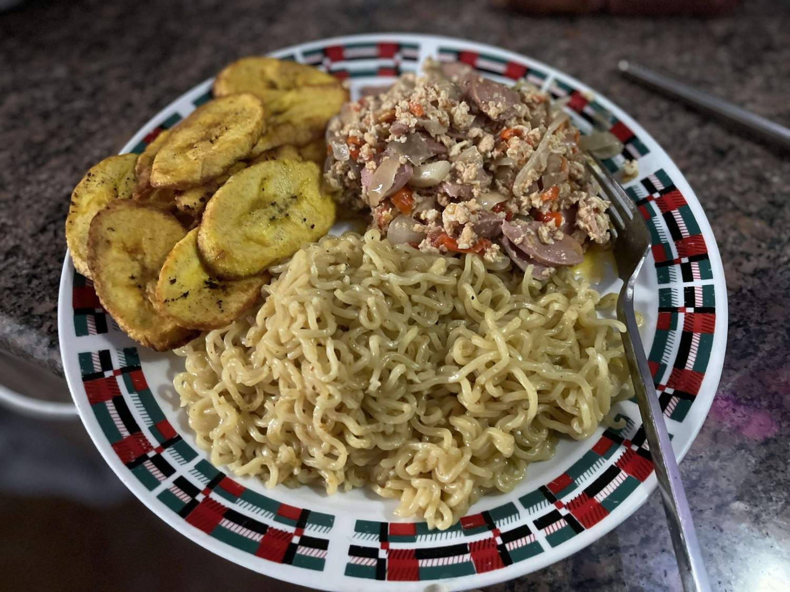

Noodles

Description
Easy Singapore noodles recipe featuring rice vermicelli noodles tossed in a curry sauce with juicy shrimp, rich BBQ char siu pork, crispy onions and peppers. It’s so scrumptious and bursting with flavor. It’s quick to make and a perfect one-pot meal
for your weekday dinner.
Ingredients
- Sliced char siu pork (or other type of meat you plan to use)
- Shrimp, sliced if needed
- Mixed sauce
- Minced garlic, ginger and onion
- Rice vermicelli noodles
- Beaten eggs
- Sliced pepper
- Sliced carrots
Steps
- Scramble the eggs
- Cook ginger, garlic and onion
- Sear the shrimp and char siu
- Cook the carrots
- Toss it with noodels and the sauce
- Add the egg back and pepper, give it a final toss